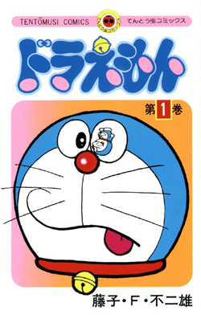

Doraemon (ドラえもん) is a Japanese manga series written and illustrated by Fujiko F. Fujio [ja]. First serialized in 1969, the manga's chapters were collected in 45 tankōbon volumes published by Shogakukan from 1974 to 1996. The story revolves around an earless robotic cat named Doraemon, who travels back in time from the 22nd century to assist a boy named Nobita Nobi in his day-to-day life.
The manga spawned a media franchise. It was adapted into three different anime TV series in 1973, 1979, and 2005. Additionally, Shin-Ei Animation has produced over forty animated films, including two 3D computer-animated films, all of which are distributed by Toho. Various types of merchandise and media have been developed, including soundtrack albums, video games, and musicals. The manga series was licensed for an English language release in North America, via Amazon Kindle, through a collaboration of Fujiko F. Fujio Pro with Voyager Japan and AltJapan Co., Ltd. The anime series was licensed by Disney for an English-language release in North America in 2014, and LUK International in Europe, the Middle East and Africa.
Doraemon was well received by critics and became a commercial success in many Asian countries. It won numerous awards, including the Japan Cartoonists Association Award in 1973 and 1994, the Shogakukan Manga Award for children's manga in 1982, and the Tezuka Osamu Cultural Prize in 1997. As of 2024, it has sold over 300 million copies worldwide, making it one of the best-selling manga series of all time. The character of Doraemon is considered a Japanese cultural icon, and was appointed as the first "anime ambassador" in 2008 by the country's Foreign Ministry.
Synopsis
See also: List of Doraemon characters
Set in 20th century Tokyo, Japan, the series revolves around Nobita Nobi, a ten-year-old school boy who is kind-hearted and honest, but also lazy, clumsy, and hapless, performing poorly in both school and sports. One day, a blue robot cat from the 22nd century named Doraemon is sent back to the past by Nobita's future great-great-grandson, Sewashi Nobi, to take care of Nobita so that his descendants can have a better life. Doraemon has a four-dimensional pocket in which he stores tools, inventions, and gadgets from the future to aid Nobita whenever he is faced with a problem. Although Doraemon is a cat robot, he has a fear of mice because of an incident where robotic mice chewed off his ears. Afterwards, Doraemon lost his original yellow color and turned blue from sadness.
Nobita has three main friends: Takeshi Goda (nicknamed Gian), Suneo Honekawa (Gian's sidekick), and Shizuka Minamoto (Nobita's love interest). Gian is a strong, leading and domineering boy, but also loyal to his friends. Suneo is a wealthy and spoiled boy who uses his friendship with Gian to win the respect of other schoolmates. Shizuka is a gentle and kind girl who frequently plays with Nobita. Nobita has a crush on Shizuka; she is his prospective future wife (Nobita's future wife is initially Gian's younger sister). Although Gian and Suneo are Nobita's friends, they also typically bully and abuse him. Nobita normally responds by using Doraemon's gadgets to fight back against them, but Nobita has a tendency to get carried away with using the gadgets (or Gian and Suneo, if they steal it away), which typically results in unintended consequences for him and others.
Dorami and Hidetoshi Dekisugi are also recurring characters. Dorami is Doraemon's younger sister, and Dekisugi is a gifted student boy who, as Shizuka's close friend, frequently attracts the jealousy of Nobita.
Production
Development and themes
Doraemon was written and illustrated by Fujiko F. Fujio, the pen name of Japanese manga artist Hiroshi Fujimoto.[5][6][7] According to Fujio, the series was originally conceived following a series of three events: when searching for ideas for a new manga, he wished a machine existed that would come up with ideas for him; during this, he tripped over his daughter's toy, and heard cats fighting in his neighborhood.[8] To set up the plot and characters, he used some elements from his earlier manga series, Obake no Q-Tarō, which involve an obake living with humans, with a similar formula.[9] Fujio said that the idea for Doraemon came after "an accumulation of trial and error", during which he finally found the most suitable style of manga to him.[10] Initially, the series achieved little success as gekiga was well known at the time, and it only became a hit after its adaptation into an anime TV series and multiple feature films.[9]
Doraemon is mainly aimed at children, so Fujio chose to create the character with a simple graphic style, based on shapes such as circles and ellipses.[11] He used the same sequences of cartoons with regularity and continuity to enhance the reader's ease of understanding. In addition, blue, a characteristic color of Doraemon, was chosen as the main color in magazine publications, which used to have a yellow cover and red title.[12] Set in Tokyo, the manga reflected parts of Japan's society, such as the class system and the "ideal" of Japanese childhood.[13][14] Problems, if they occurred, were resolved in a way so as not to rely on violence and eroticism,[15] and the stories were integrated with the concept of environmentalism.[16] The manga also insisted on the ethical values of integrity, perseverance, courage, family and respect.[17]
In order to underline the crucial role of the younger generation in society, the manga's creator chose to have the act carried out in a "children's domain" where young people can live with happiness, freedom and power without adult interference.[18] As Saya S. Shiraishi noted, the existence of the "domain" helped Doraemon to have a strong appeal in various Asian countries.[18] During Doraemon's development, Fujio did not express a change in characters; he said, "When a manga hero become a success, the manga suddenly stops being interesting. So the hero has to be like the stripes on a barber pole; he seems to keep moving upward, but actually he stays in the same place."[19]
According to Zensho Ito, Fujio's former student, the "length" of time in the universe is one of the ideas that inspired Fujio to make Doraemon.[20] Frequently displayed in its stories is Nobita's desire to control time, and there exist time-control gadgets that he uses to satisfy that desire, particularly the "Time Machine", which lies in his desk drawer.[21] Unlike Western works of science fiction, the manga does not explain the theory nor the applied technology behind these tools, but instead focuses on how the characters exploit them to their advantage, making it more child-friendly.[22]
Origin of name
The name "Doraemon" can be roughly translated to "stray". Unusually, the name "Doraemon" (ドラえもん) is written in a mixture of two Japanese scripts: katakana (ドラ) and hiragana (えもん). "Dora" derives from "dora neko" (どら猫; stray cat), and is a corruption of nora ("stray"),[8] while "-emon" (in kanji 右衛門) is an old-fashioned suffix for male names (for example, as in Ishikawa Goemon).[23]
The name "Nobita Nobi" refers to "nobi nobi", meaning "the way a young child grows up free, healthy, and happy, unrestrained in any sense".[13][24]
The name "Tsukimidai-Susukigahara", the fictional neighborhood in Nerima Ward, Tokyo where Nobita Nobi and his friends live,[25][b] refers to the Fujimidai neighborhood,[13] where Osamu Tezuka's residence and animation studio, Mushi Production, is based.[26][27]